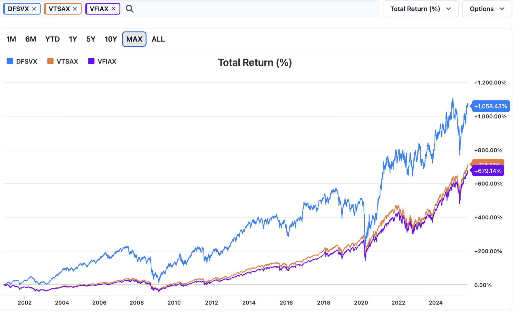
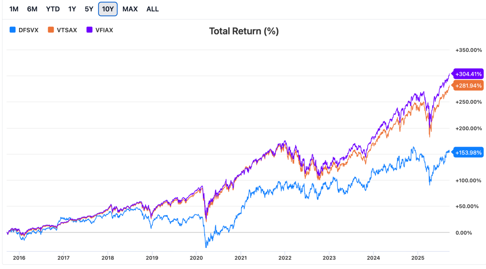
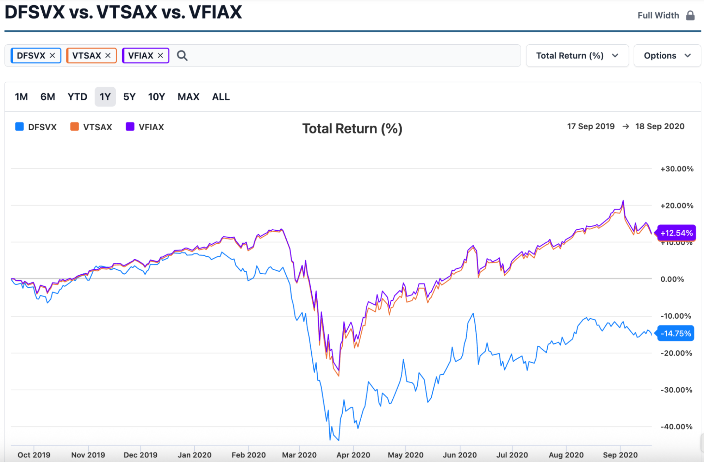

A deeper dive into the math behind stock prices, additional risk factors, and how to find funds that capture them.
What really decides a stock’s price? (Math) ▾
In the earlier sections, I only referenced a single type of undiversifiable risk: market risk. The rest of this section will discuss the other types of risk that can be added to a portfolio to increase short-term risk & long term returns beyond that of the market portfolio.
Nobel Prize laureates Fama & French made a 3-factor model which explains 90% of the variance of all stock returns. Market Risk (Mkt-Rf), Market Capitalization (SMB), and Book-To-Market Ratio (HML).
This is a model that seems to be pretty accepted from what I’ve seen and the names of the other two factors often describe index funds. SMB is named “small cap” for higher risk stocks and “large cap” for lower risk ones, and HML is called “value” for higher risk stocks and “growth” for lower risk stocks. In the prior bonus section, we had this equation for the change in value of a stock S: ΔS = β*ΔM ± ɑ, where ΔM = .07 * M(0) ± ε
That ~1.07 is the market discount Mkt-Rf, but other risk exposures like SMB or HML also have risk discounts:
Just like how some years, the market can perform above expectations, Fama & French posit that in some years small companies and value companies can have exceptional or lackluster years. They observed that often one factor (such as Mkt-Rf) can perform well while others (such as SMB) can perform poorly, suggesting these factors are independent of one another.
These fit intuitive definitions of risk because smaller-cap companies are more likely to collapse than the ones that dominate the world, and cheap stocks (relative to their earnings or “book value”) are riskier because for some reason, investors are pricing them low, which may indicate negative information about them. And it makes sense they would have higher expected returns too, especially since large-cap growths like S&P 500 companies have already seen their large price spikes in order to become large-cap growths.
Out of these three, SMB is the most contested one – it has historically delivered a very small premium that weakened after its discovery and is barely present in several other countries, indicating it may not be an actual risk and rather a soon-to-disappear mispricing. In the hilariously named paper Size Matters, if you control your junk, the author details how certain small stocks they call “junk”, that have low profitability (an upcoming risk factor), weigh down the small company’s size discount over history. By removing it, they see a size premium that persists even by slightly tweaking the definition of SMB. This means the premium is robust, which is important to determine if selection bias is the only cause of the premium.
Historically, small-cap value stocks have outperformed the total market portfolio over long time spans[1], which implicitly corroborates the main section of this paper: past performance and company excellence do not control expected stock price growth. Instead, the most practical way to get extra returns is by taking more risk.
And in fact, value stocks are shown to be much more risky in bad times and only slightly more risky during good times, meaning they always have a higher expected return with a larger spread of possible results.[2] In particular, value stocks have shown a premium robust to multiple definitions in international markets and HML has had a 5% higher annual average return in the US than Mkt-Rf, with 3-5% being the standard range for other developed countries.[3]
There are three further notable pricing factors:
Profit-to-Revenue Ratio (RMW) & Change-in-Assets to Total Assets Ratio (CMA) which are added to the 3-factor model by Fama & French to make the Fama-French 5 factor model. These two factors increase the R2 of their model from 0.9 to 0.95, explaining 95% of asset prices and these two make HML approach zero – meaning they explain value more precisely, rather than indicating another way to profit.
RMW means that companies which have high profit margins are riskier because if a company with high profit margins has the same price as one with a low margin, investors are likely pricing in some other risk. CMA means companies which have a low amount of asset growth per year are more likely to collapse during a downturn.
Those two are unlikely to have an impact on your investing unless products come out that can target RMW and CMA independently and cheaply instead of targeting HML.
At this point, you may have noticed that the risk factors beyond Mkt-Rf (SMB, HML, RMW, and CMA) seem to have no common theme. SMB argues that investing in small companies tends to be riskier (and therefore better returns). While HML argues that investing in companies with cheap price-to-book ratio leads to better returns. But a company being small is generally a disadvantage for business success, while a company’s shares being “cheap” is generally an advantage for business success. And then RMW and CMA appear to be neither good or bad for the company’s success.
That’s because all these factors, and the below factor, are empirical factors. What that means is that the reason we believe these are risks is mostly because of high correlations with historical outperformance. But if you tried, you could pretty easily make a reasonable argument that these are market inefficiencies, not risk factors, and therefore we should not expect them to persist in the future. You could not do this for Mkt-Rf – because stocks by their definition are risky, but small stocks, cheap stocks, or stocks exposed to any of the above risk factors may not necessarily possess risk that is meaningfully different from market risk exposure – if the data from the past few hundred years turns out to be a statistical anomaly.
That leads well into the final factor, which has commanded the highest returns compared to all the prior factors, yet its definition also sounds more like an inefficiency than any other factor.
Momentum, or Percentile of Recent Growth (MOM) is added to the 3-factor model by Carhart, making the Carhart 4-factor model and is the most controversial of the additional factors. It captures the tendency for stocks which have recently surged to continue to surge in that direction, which can be explained either by investor irrationality or because stocks that continue to surge are at a higher risk during market crashes.
If you believe in the arguments, or from the data, that these five factors are five additional risk factors (and not market inefficiencies), then exposing your portfolio to these additional risks should increase your risk exposure and future returns.
This factor regression tool lists the best funds for each factor. Note not all results are publicly available, some are institutional investing only. Generally those will have a letter at the end of the full name.
Here are the best ones I could find:
US Small-Cap Value
AVUV – SMB=0.79, HML=0.73, R2=97%, Expense Ratio = 0.25% (after 40 years = 9.6%)
VFVA – SMB=0.44, HML=0.72, R2=97%, Expense Ratio = 0.13% (after 40 years = 5.1%)
SVAL – SMB=0.87, HML=0.76, R2=94.5%, Expense Ratio = 0.2% (after 40 years = 7.7%)
International Small Cap Value
AVDV – SMB=0.06, HML=0.41, R2=77.5%, Expense Ratio = 0.36% (after 40 years = 13.5%)
US Momentum
VFMO – SMB=0.59, HML=0.16, MOM=0.39, R2=95.6%, ER = 0.13%, ER after 40y = 5.1%
International Momentum
IMTM – SMB=-0.23, HML= -0.07, MOM=0.42, R2=93.2%, ER = 0.3%, ER after 40y = 11.4%
Below I will show some diagrams comparing the oldest Small Cap Value fund I could find vs. the oldest S&P Index and oldest Total US market funds I could find. Remember that past returns do not indicate future growth, and it is irrational and anti-theory to base your investments off that.

Past 25-year returns of Small-Cap Value (Blue) vs. Total US Market (Orange) vs. S&P 500 (Purple).

Past 10-year returns – Note that US Large Caps have delivered far above expectations over the last decade, and that Small-Cap Value stocks seem to be much riskier in bad times than Large-Cap Growth (S&P 500) or Total Market. On average, we expect large-cap growth to perform lowest and small-cap value highest, but this is an excellent example of variance. And for all premia, we can expect decade-long periods of underperformance relative to one another. If 10-year underperformance of market risk by 50% or more would cause you to sell low, do not invest in small-cap value.

1-year performance of Small-Cap Value during COVID-19’s unprecedented crisis. If you are prone to selling when your investments sink, and your peers’ investments grow, you should not invest in SCV because the self-sabotage risk will be far too high.
But if you do invest in Small-Cap Value, then you are adding even more diversification to your portfolio because now your entire returns are not driven by market risk. So in times when market risk underperforms, SCV may overperform, or vice versa at the time when you will actually need your money (probably retirement).
Here are questions that are good for everyone to ask.
If you are not convinced by the arguments made in this paper, and still want to engage in Active Investing (Day Trading/Professional Active Management), ask these questions:
If you are paying an active manager, also ask yourself this:
[1] – Cross Section of Expected Stock Returns
[2] – Risk and Return of Value Stocks
[3] – Value vs Growth International Data
Size Matters, if you control your junk
Common Risk Factors in the Return on Stocks and Bonds
A Five-Factor Asset Pricing Model
Videos
Five-Factor Investing With ETFs
Webpages